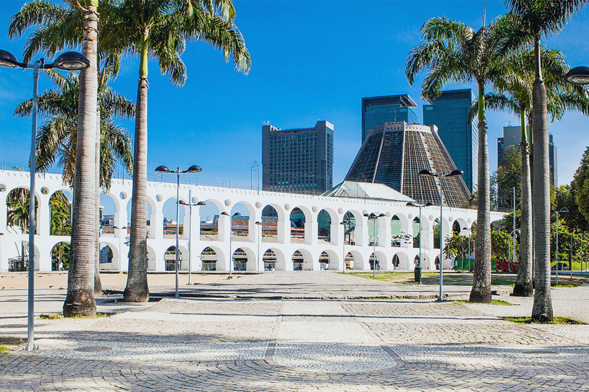

Venha conhecer o Rio de janeiro
Venha viver a magia do Rio de Janeiro! Desfrute das praias paradisíacas, explore o Cristo Redentor e se encante com a energia vibrante da cidade. O Rio oferece uma mistura única de natureza deslumbrante e cultura rica, esperando por você a cada esquina. Não perca a chance de conhecer um dos destinos mais incríveis do mundo!
